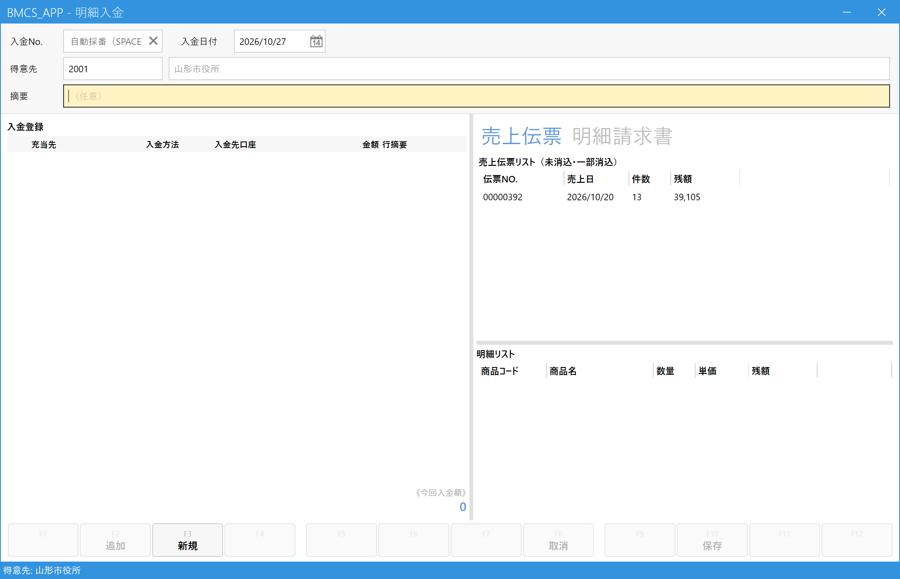
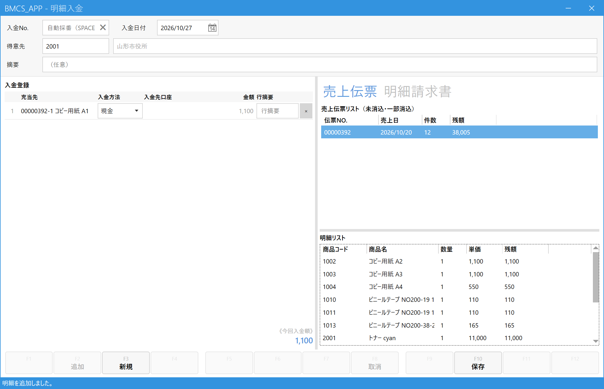

都度請求の入金を登録する（明細入金）
こんなときに使います
官公庁・学校など都度請求の得意先から入金があったときに登録します。
締め取引の得意先のように「古い請求から自動で」ではなく、どの売上（または請求書）の入金かを指定します。
官公庁・学校など都度請求の得意先から入金があったときに登録します。
締め取引の得意先のように「古い請求から自動で」ではなく、どの売上（または請求書）の入金かを指定します。
締め取引の得意先（20日締め・末日締めなど）は、この画面では登録できません（「入金入力画面をご利用ください」と表示されます）。入金入力を使います。
1.得意先を決めて、入金の対象を探す
メインメニューの「入金」の中の「明細入金」を開き、得意先欄にコードを入れて Enter（Space で検索）。右側に、その得意先の入金がまだ済んでいない売上伝票が出ます。

- 入金日付：お金を受け取った日。
- 得意先：入金してくれた得意先。
- タブ：「売上伝票」＝売上の明細を指定して入金／「明細請求書」＝発行済みの請求書を1枚まるごと指定して入金。
- 売上伝票リスト：入金が済んでいない（または一部だけ済んだ）伝票です。件数と残額が出ます。
- 明細リスト：上で選んだ伝票の明細行です。ここから入金の対象を選びます。
2.入金の対象を選ぶ
売上伝票タブでは、まず伝票を選ぶと下の明細リストが出るので、入金された明細行を選んで Enter（またはダブルクリック）。左の「入金登録」に1行ずつ入ります。

- 伝票を選びます（クリック）。
- 入金された明細行で Enter。追加した行は、明細リストからは消えます。
- 入金登録：追加した行です。「充当先」に、伝票番号と行・商品名が出ます。金額は自動で入ります（その行の残額の全額で、手で変えることはできません）。
- 入金方法：現金・振込などを選びます（振込は入金先口座も選びます）。手形は選べません。
- 今回入金額：追加した行の合計です。受け取った金額と合っているか確認します。
- 保存 (F10)。
行を間違えて入れたら、その行の×で消せます。
請求書を指定して入金するとき
先に明細請求書を発行してある場合は、「明細請求書」タブに切り替えて、入金された請求書を選んで Enter。請求書1枚が丸ごと1行として入ります。
請求書の一部の売上だけ入金があったときは、請求書タブではなく、売上伝票タブで該当の明細行を指定します。
3.保存する
保存 (F10) を押すと、入金No.が付いて登録され、指定した売上は「消込済み」（全額の場合）になります。
4.よくある操作
| やりたいこと | 操作 |
|---|---|
| 登録済みの入金を見る・直す | 入金No.欄に番号を入れて Enter、または Space で一覧から選ぶ。直して保存。 |
| 入金を取り消す | 入金を呼び出して、ツールバーの「取消 (F8)」。月次締め済みの月の入金は、先に月次締めを解除しないと取り消せません。 |
| 最初からやり直したい | 「新規 (F3)」。 |